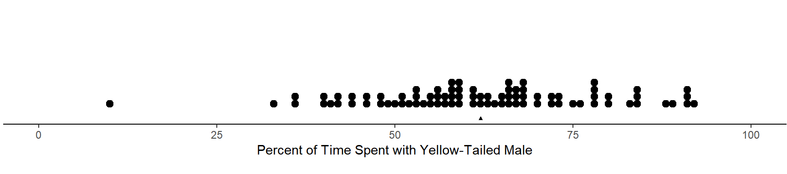
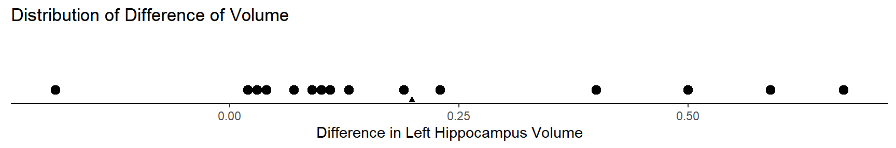
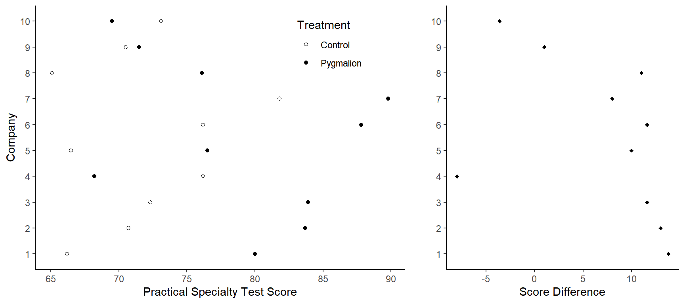
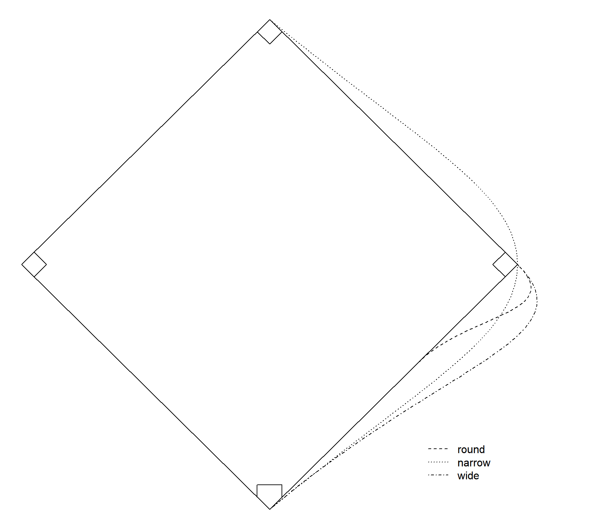

You can also download a PDF copy of this lecture.
Do female platies have a preference for a yellow-tailed male?  For the sample of \(n\) = 84 observations, mean percent time spent with the yellow-tailed male was about \(\bar{x}\) = 62.1% and the standard deviation was about \(s\) = 15.4%. Would we conclude that female platies spend, on average, more time with the yellow-tailed male?
For the null hypothesis \(H_0\!: \mu = \mu_0\) the test statistic \[ t = \frac{\bar{x}-\mu}{s/\sqrt{n}} \] has (approximately) a \(t\)-distribution with \(n-1\) degrees of freedom. Computing the \(p\)-value based on a \(t\) test statistic works the same as it does for the \(z\) test statistic, except that a \(t\) distribution is used.
\(H_a\!: \mu > \mu_0\). The \(p\)-value is \(P(\left. t \ge t_{\text{obs}} \right| H_0)\) (i.e., the probability of a value of \(t\) greater than or equal to the value we observed when \(H_0\) is true).
\(H_a\!: \mu < \mu_0\). The \(p\)-value is \(P(\left. t \le t_{\text{obs}} \right| H_0)\) (i.e., the probability of a value of \(t\) less than or equal to the value we observed when \(H_0\) is true).
\(H_a\!: \mu \neq \mu_0\). The \(p\)-value is \(P(\left. |t| \ge |t_{\text{obs}}| \ \right| H_0)\) (i.e., the probability of a value of \(t\) that is at least as large in absolute value than the value we observed when \(H_0\) is true).
Note that here \(\mu_0\) denotes the value of \(\mu\) hypothesized by the null hypothesis, and \[t_{\text{obs}} = \frac{\bar{x}-\mu_0}{s/\sqrt{n}}\] is the value of the test statistic we observe/compute.
The steps of a statistical test concerning \(\mu\) are like those for the test concerning \(p\).
State the null and alternative hypotheses.
Check sample size and distribution (informally).
Compute the test statistic.
Compute the \(p\)-value using the \(t\) distribution.
Make a decision.
Example: For the sample of \(n\) = 84 observations, mean percent time spent with the yellow-tailed male was about \(\bar{x}\) = 62.1% and the standard deviation was about \(s\) = 15.4%. Would we conclude that female platies spend, on average, more time with the yellow-tailed male?
Example: Consider the following data from a study of the volume of the left hippocampus for twin pairs discordant for schizophrenia.| Pair | Unaffected | Affected | Difference |
|---|---|---|---|
| 1 | 1.94 | 1.27 | 0.67 |
| 2 | 1.44 | 1.63 | -0.19 |
| 3 | 1.56 | 1.47 | 0.09 |
| 4 | 1.58 | 1.39 | 0.19 |
| 5 | 2.06 | 1.93 | 0.13 |
| \(\vdots\) | \(\vdots\) | \(\vdots\) | \(\vdots\) |
| 15 | 2.08 | 1.97 | 0.11 |

The mean difference from the sample is \(\bar{x}\) = 0.2 cubic centimeters, and the standard deviation from the sample is \(s\) = 0.24 cubic centimeters. Is this result statistically significant at a signficiance level of \(\alpha\) = 0.05?
Example: Consider the data from the study of the pygmalion effect. The figure below shows the scores from the platoons in the control and pygmalion treatment conditions for each company, and the differences between those scores for each company. 
The mean score difference is 7 and the standard deviation is 7.6. Is the apparent pygmalion effect statistically signficant at a significance level of \(\alpha\) = 0.05?
Example: Each of 22 baseball players ran from home plate to second base two times for each of three routes: round, narrow, and wide. These routes are illustrated in the figure below (the routes have been exaggerated slightly for illustration).  Let’s compare the narrow and wide routes. (Note: The running times are the average of two runs between a point 35 feet from home plate to a point 15 feet short of second base.)| Player | narrow | wide | Difference |
|---|---|---|---|
| 1 | 5.5 | 5.55 | -0.05 |
| 2 | 5.7 | 5.75 | -0.05 |
| 3 | 5.6 | 5.5 | 0.1 |
| 4 | 5.5 | 5.4 | 0.1 |
| 5 | 5.85 | 5.7 | 0.15 |
| \(\vdots\) | \(\vdots\) | \(\vdots\) | \(\vdots\) |
| 22 | 6.3 | 6.25 | 0.05 |
For the sample of observations, the mean difference is 0.075 seconds, and the standard deviation is 0.088 seconds. Is a mean difference of 0.075 seconds statistically significant at a significance level of \(\alpha\) = 0.05?